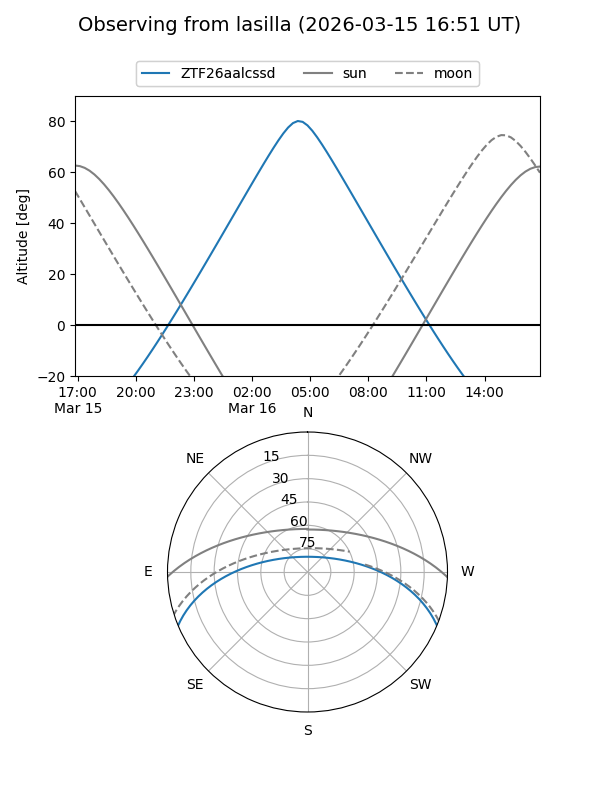
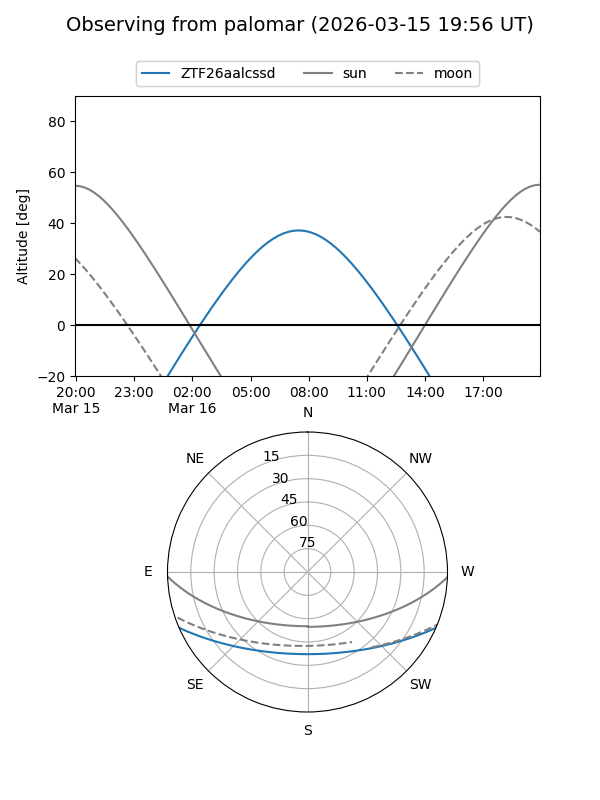

ZTF26aalcssd
Target ZTF26aalcssd at 2026-03-16 07:10
Aliases and brokers:
FINK: link
Lasair: link
ALeRCE: link
alt names
ZTF26aalcssd (ztf,fink_ztf)
Coordinates:
equatorial (ra, dec) = 168.9186,-19.31132
equatorial (HMS+DMS) = 11:15:40.47,-19:18:40.74
galactic (l, b) = (273.8170,+38.08700)
Flags:
Photometry:
last ztfg=18.75
1 ztfg detections
Lightcurve
Visibility


Additional plots